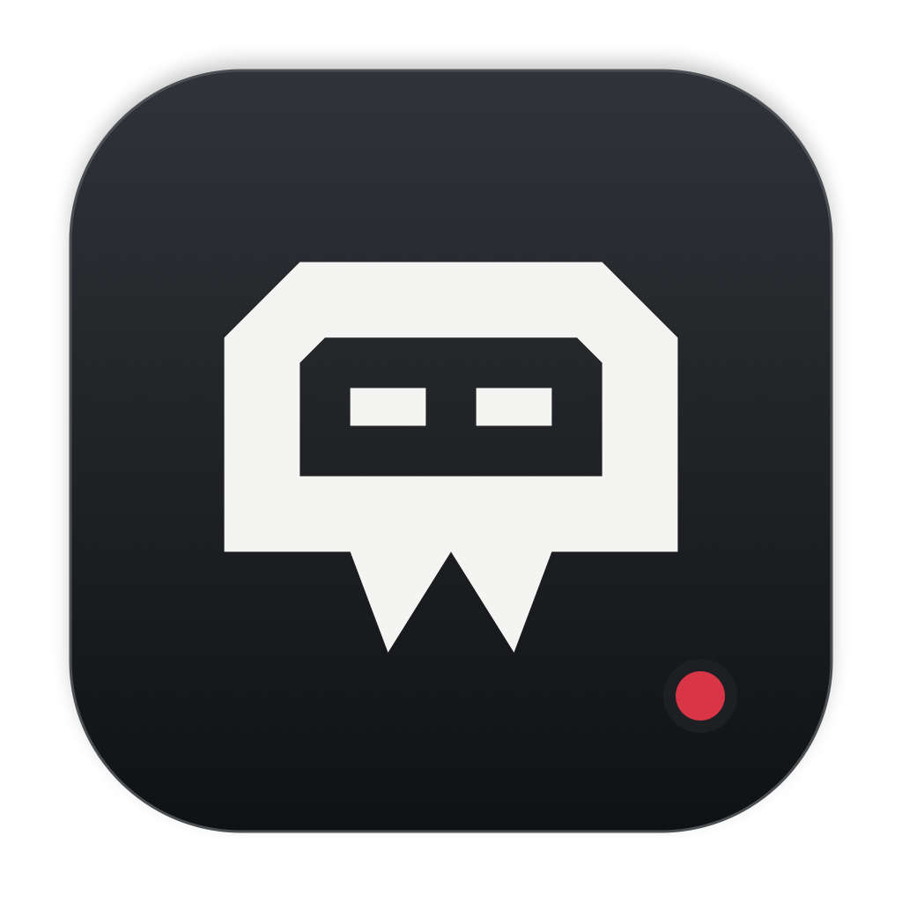

01
Models
Browse the catalog, check what fits your Mac, download with pause and resume, or import MLX and GGUF models. Load a local model or choose a connected provider.
Run assistant models on your Mac. Chat, use tools, manage bots, and approve work from the existing Vamp Assistant app on iPhone or iPad.
Apple Silicon · macOS 15+ · signed & notarized

Local models + your API providers
Chats, tools, bots, and approvals
The Mac handles setup and execution. Your phone is the main assistant interface.
Browse the catalog, check what fits your Mac, download with pause and resume, or import MLX and GGUF models. Load a local model or choose a connected provider.
Enable iPhone access, scan a QR or enter a pairing code, and see your connection address. Renew pairing and revoke devices whenever you choose.
Connect API providers and accounts, save Hugging Face credentials, choose appearance and launch at login, and manage sharing, Mac control, and updates.
Close the window and keep going from iOS. Downloads and remote sessions continue; the menu bar brings Models, Devices, or Settings back when needed. Your Mac must stay awake and reachable.
Local inference runs on your Mac. When you choose an API provider or connected service, the relevant requests go to that service; its availability and costs apply.
Use the existing Vamp Assistant iOS app. All its assistant features stay available.
Unzip the download and move Vamp Companion.app to Applications. Download or import a model, or connect an API provider.
Open your existing Vamp Assistant build on iPhone or iPad. You can pair a sideloaded installation directly. An iOS download will be added here when available.
In Devices on Mac, enable iPhone access. On iOS, scan the QR or enter the address and code. Connect over trusted Wi-Fi or your private Tailscale network, then start a session.
Using App Stream? Version 1.0 build 9 also scans Companion pairing QR codes for remote access and permitted Mac control on the same Wi-Fi or Ethernet network. It is available to invited testers through TestFlight.
Pairing, sharing, and control each have their own settings. Grant only the access you want to use.
Companion goes on the Mac. The existing Assistant app goes on iPhone or iPad.
Apple Silicon and macOS 15 or later. Download the signed, notarized ZIP, unzip it, and move the app to Applications.
0.1.1 · build 2
iOS or iPadOS 18 or later. The existing app handles sessions, streaming, stop, approvals, bots, and permitted tools. Re-sign the unsigned IPA to install.
iOS download not available yet. Existing sideloaded builds can pair now.
Prefer to chat and work directly on your Mac? Vamp Assistant includes the full Mac workspace.
Explore Vamp Assistant →